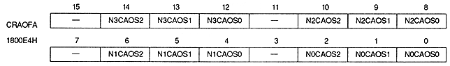
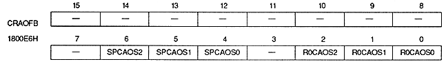

N0SDEN | 1800E2H | bit 0 | For NBG0 (or RBG1) |
N1SDEN | 1800E2H | bit 1 | NBG1 (or EXBG) |
N2SDEN | 1800E2H | bit 2 | For NBG2 |
N3SDEN | 1800E2H | bit 3 | NBG3 |
R0SDEN | 1800E2H | bit 4 | for RBG0 |
BKSDEN | 1800E2H | bit 5 | BACK use |
xxSDEN | Processing |
0 | Do not use shadow function (do not add shadow) |
1 | Use shadow function (add shadow) |
TPSDSL | Processing |
0 | Turn off transparent shadow sprites |
1 | Enable transparent shadow sprite |


Color RAM address offset bit : Color RAM address offset bit